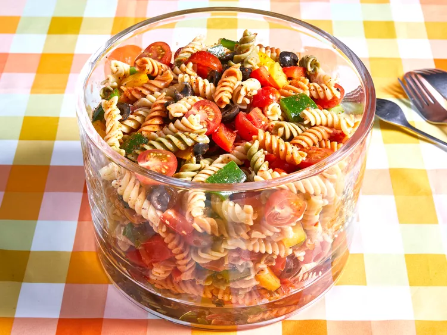

Pasta Salad

Description:
Pasta salad is a refreshing dish that blends al dente pasta with crisp
vegetables and flavorful dressing.
It's versatile enough for casual meals
or special occasions, offering a satisfying mix of textures and tastes.
The simplicity of its ingredients belies the complexity of flavors, making
it a perennial favorite for its ease
and adaptability in any culinary
setting.
Ingredients:
- 1 pound tri-colored spiral pasta
- 1 (16 ounce) bottle Italian-style salad dressing
- 6 tablespoons salad seasoning mix
- 2 cups cherry tomatoes, diced
- 1 green bell pepper, chopped
- 1 red bell pepper, diced
- ½ yellow bell pepper, chopped
- 1 (2.25 ounce) can black olives, chopped
Steps:
- Gather all ingredients.
-
Bring a large pot of lightly salted water to a boil. Cook pasta in the
boiling water, stirring occasionally,
until tender yet firm to the bite,
about 10 to 12 minutes; rinse under cold water and drain.
-
Whisk Italian dressing and salad spice mix together until smooth.
Combine pasta, tomatoes, bell peppers,
and olives in a salad bowl.
- Pour dressing over salad and toss to coat.
- Refrigerate salad, 8 hours to overnight.
- Enjoy!